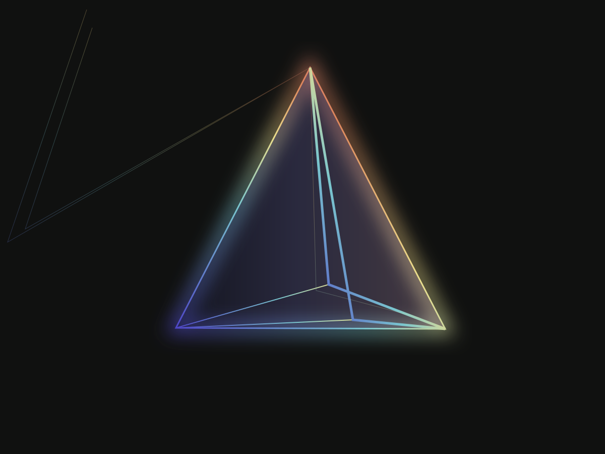

Concept release date: 12.12.2026 See the three sides
DƯ ẢNH

The music stops.
The light stays.
Side A. Songs that change direction halfway through.
Still view. Live light is unavailable in this browser.
A song ends.
Something
stays on.
Dư ảnh is the Vietnamese word for an afterimage: the shape your eye still sees after you look away.
So the album has no fixed cover. It is one prism of light that changes with every side and moves with the sound.
See the three sides02 — The record
One light. Three sides. Nine songs.03 — The rollout
Eight weeks in Hanoi and Saigon- Week 1
The light appears
Bus shelters and rooftop screens show only the prism. No name, no date.
- Week 3
First single
“Bẻ cong” is released, and the prism starts moving with the song.
- Week 6
Your cover
Fans make their own cover from the light and share it.
- Week 8
Album day
Dark listening rooms open, with one prism in each room following the record.
The formats
Pick how you keep it- 2×LPSides A, B and C. Side D has no music, only an etched prism.
- CassetteClear shell, for the car and the old deck at home.
- DigitalAll nine songs, with the live cover on the album page.
Some songs
stay with you.
Every cover starts where you stop the light.
Save yours as a poster.
- Audience
- Young Vietnamese listeners who still buy records
- Objective
- Launch a debut album with one idea people can touch
- My role
- Concept, art direction, copy and build
- Deliverables
- Live cover, three previews, rollout plan, VI/EN launch page
Dư Ảnh is a fictional band, this is a self-initiated concept, and nothing here is on sale. The previews are placeholder sounds synthesized in your browser, not songs from the tracklist.